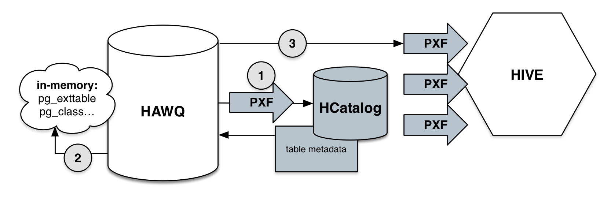

Accessing Hive Data
- Prerequisites
- Hive File Formats
- Data Type Mapping
- Sample Data Set
- Hive Command Line
- Using PXF and HCatalog to Query Hive
- Querying External Hive Data
- Hive Profile
- HiveText Profile
- HiveRC Profile
- HiveORC Profile
- Accessing Parquet-Format Hive Tables
- Complex Data Types
- Partition Filtering
- Using PXF with Hive Default Partitions
Apache Hive is a distributed data warehousing infrastructure. Hive facilitates managing large data sets supporting multiple data formats, including comma-separated value (.csv), RC, ORC, and parquet. The PXF Hive plug-in reads data stored in Hive, as well as HDFS or HBase.
This section describes how to use PXF to access Hive data. Options for querying data stored in Hive include:
- Querying Hive tables via PXF’s integration with HCatalog
- Creating an external table in PXF and querying that table
Prerequisites
Before accessing Hive data with HAWQ and PXF, ensure that:
- The PXF HDFS plug-in is installed on all HAWQ and HDFS cluster nodes (master, segment, NameNode, DataNode). See Installing PXF Plug-ins for PXF plug-in installation information.
- The PXF Hive plug-in is installed on all HAWQ and HDFS cluster nodes.
- If you configured Hadoop with high availability, PXF must also be installed on all HDFS nodes running NameNode services.
- The Hive client is installed on all PXF nodes.
- The Hive JAR files and conf directory are installed on all cluster nodes.
- You have tested PXF on HDFS.
- You are running the Hive Metastore service on a machine in your cluster.
- You have set the
hive.metastore.urisproperty in thehive-site.xmlon the NameNode.
Hive File Formats
The PXF Hive plug-in supports several file formats and profiles for accessing these formats:
| File Format | Description | Profile |
|---|---|---|
| TextFile | Flat file with data in comma-, tab-, or space-separated value format or JSON notation. | Hive, HiveText |
| SequenceFile | Flat file consisting of binary key/value pairs. | Hive |
| RCFile | Record columnar data consisting of binary key/value pairs; high row compression rate. | Hive, HiveRC |
| ORCFile | Optimized row columnar data with stripe, footer, and postscript sections; reduces data size. | Hive, HiveORC |
| Parquet | Compressed columnar data representation. | Hive |
| Avro | JSON-defined, schema-based data serialization format. | Hive |
Refer to File Formats for detailed information about the file formats supported by Hive.
Data Type Mapping
Primitive Data Types
To represent Hive data in HAWQ, map data values that use a primitive data type to HAWQ columns of the same type.
The following table summarizes external mapping rules for Hive primitive types.
| Hive Data Type | Hawq Data Type |
|---|---|
| boolean | bool |
| int | int4 |
| smallint | int2 |
| tinyint | int2 |
| bigint | int8 |
| float | float4 |
| double | float8 |
| string | text |
| binary | bytea |
| timestamp | timestamp |
Complex Data Types
Hive supports complex data types including array, struct, map, and union. PXF maps each of these complex types to text. While HAWQ does not natively support these types, you can create HAWQ functions or application code to extract subcomponents of these complex data types.
Examples using complex data types with the Hive and HiveORC profiles are provided later in this topic.
Sample Data Set
Examples used in this topic will operate on a common data set. This simple data set models a retail sales operation and includes fields with the following names and data types:
| Field Name | Data Type |
|---|---|
| location | text |
| month | text |
| number_of_orders | integer |
| total_sales | double |
Prepare the sample data set for use:
First, create a text file:
$ vi /tmp/pxf_hive_datafile.txtAdd the following data to
pxf_hive_datafile.txt; notice the use of the comma,to separate the four field values:Prague,Jan,101,4875.33 Rome,Mar,87,1557.39 Bangalore,May,317,8936.99 Beijing,Jul,411,11600.67 San Francisco,Sept,156,6846.34 Paris,Nov,159,7134.56 San Francisco,Jan,113,5397.89 Prague,Dec,333,9894.77 Bangalore,Jul,271,8320.55 Beijing,Dec,100,4248.41
Make note of the path to pxf_hive_datafile.txt; you will use it in later exercises.
Hive Command Line
The Hive command line is a subsystem similar to that of psql. To start the Hive command line:
$ HADOOP_USER_NAME=hdfs hive
The default Hive database is named default.
Example: Create a Hive Database
Create a Hive table to expose our sample data set.
Create a Hive table named
sales_infoin thedefaultdatabase:hive> CREATE TABLE sales_info (location string, month string, number_of_orders int, total_sales double) ROW FORMAT DELIMITED FIELDS TERMINATED BY ',' STORED AS textfile;Notice that:
- The
STORED AS textfilesubclause instructs Hive to create the table in Textfile (the default) format. Hive Textfile format supports comma-, tab-, and space-separated values, as well as data specified in JSON notation. - The
DELIMITED FIELDS TERMINATED BYsubclause identifies the field delimiter within a data record (line). Thesales_infotable field delimiter is a comma (,).
- The
Load the
pxf_hive_datafile.txtsample data file into thesales_infotable you just created:hive> LOAD DATA LOCAL INPATH '/tmp/pxf_hive_datafile.txt' INTO TABLE sales_info;In examples later in this section, you will access the
sales_infoHive table directly via PXF. You will also insertsales_infodata into tables of other Hive file format types, and use PXF to access those directly as well.Perform a query on
sales_infoto verify that the data was loaded successfully:hive> SELECT * FROM sales_info;
Determine the HDFS location of a Hive Table
Should you need to identify the HDFS file location of a Hive managed table, reference it using its HDFS file path. You can determine a Hive table’s location in HDFS using the DESCRIBE command, for example:
hive> DESCRIBE EXTENDED sales_info;
Detailed Table Information
...
location:hdfs://<namenode>:<port>/apps/hive/warehouse/sales_info
...
The location value identifies the HDFS file path of the table.
Using PXF and HCatalog to Query Hive
You can query Hive tables directly through HCatalog integration with HAWQ and PXF, regardless of the underlying file storage format. This integration allows HAWQ to directly use table metadata stored in HCatalog.
HCatalog is built on top of the Hive metastore and incorporates Hive’s DDL. This provides several advantages:
- You do not need to know the table schema of your Hive tables
- You do not need to manually enter information about Hive table location or format
- If Hive table metadata changes, HCatalog provides updated metadata. This is in contrast to the use of static external PXF tables to define Hive table metadata for HAWQ.
The following diagram depicts how HAWQ integrates with HCatalog to query Hive tables:

- HAWQ retrieves table metadata from HCatalog using PXF.
- HAWQ creates in-memory catalog tables from the retrieved metadata. If a table is referenced multiple times in a transaction, HAWQ uses its in-memory metadata to reduce external calls to HCatalog.
- PXF queries Hive using table metadata that is stored in the HAWQ in-memory catalog tables. Table metadata is dropped at the end of the transaction.
Enabling HCatalog Integration
To enable HCatalog query integration in HAWQ, perform the following steps:
- Make sure your deployment meets the requirements listed in Prerequisites.
If necessary, set the
pxf_service_addressglobal configuration property to the hostname or IP address and port where you have installed the PXF Hive plug-in (preferably the HDFS NameNode). By default, the value is set tolocalhost:51200. For example:postgres=# SET pxf_service_address TO '<namenode>:51200';HCatalog internally uses the
pxfprotocol to query. Grant this protocol privilege to all roles requiring access:postgres=# GRANT ALL ON PROTOCOL pxf TO <role>;It is not recommended to create a HAWQ table using the
WITH (OIDS)clause. If any user tables were created using theWITH (OIDS)clause, additional operations are required to enable HCatalog integration. To access a Hive table via HCatalog when user tables were created usingWITH (OIDS), HAWQ users must haveSELECTpermission to query every user table within the same schema that was created using theWITH (OIDS)clause.Determine which user tables were created using the
WITH (OIDS)clause:postgres=# SELECT oid, relname FROM pg_class WHERE relhasoids = true AND relnamespace <> (SELECT oid FROM pg_namespace WHERE nspname = 'pg_catalog');Grant
SELECTprivilege on all returned tables to all roles to which you chose to provide HCatalog query access. For example:postgres=# GRANT SELECT ON <table-created-WITH-OIDS> TO <role>
Usage
To query a Hive table with HCatalog integration, query HCatalog directly from HAWQ. The query syntax is:
postgres=# SELECT * FROM hcatalog.hive-db-name.hive-table-name;
For example:
postgres=# SELECT * FROM hcatalog.default.sales_info;
To obtain a description of a Hive table with HCatalog integration, you can use the psql client interface.
Within HAWQ, use either the
\d hcatalog.hive-db-name.hive-table-nameor\d+ hcatalog.hive-db-name.hive-table-namecommands to describe a single table.\ddisplays only HAWQ’s interpretation of the underlying source (Hive in this case) data type, while\d+displays both the HAWQ interpreted and Hive source data types. For example, from thepsqlclient interface:$ psql -d postgrespostgres=# \d+ hcatalog.default.sales_info;PXF Hive Table "default.sales_info" Column | Type | Source type ------------------+--------+------------- location | text | string month | text | string number_of_orders | int4 | int total_sales | float8 | doubleUse
\d hcatalog.hive-db-name.*to describe the whole database schema, i.e. all tables inhive-db-name.Use
\d hcatalog.*.*to describe the whole schema, i.e. all databases and tables.
When using \d or \d+ commands in the psql HAWQ client, hcatalog will not be listed as a database. If you use other psql compatible clients, hcatalog will be listed as a database with a size value of -1 since hcatalog is not a real database in HAWQ.
Alternatively, you can use the pxf_get_item_fields user-defined function (UDF) to obtain Hive table descriptions from other client interfaces or third-party applications. The UDF takes a PXF profile and a table pattern string as its input parameters. Note: The only supported input profile at this time is 'Hive'.
The following statement returns a description of a specific table. The description includes path, itemname (table), fieldname, fieldtype (HAWQ type), and sourcefieldtype (Hive type).
postgres=# SELECT * FROM pxf_get_item_fields('Hive','default.sales_info');path | itemname | fieldname | fieldtype | sourcefieldtype ---------+------------+------------------+-----------+----------------- default | sales_info | location | text | string default | sales_info | month | text | string default | sales_info | number_of_orders | int4 | int default | sales_info | total_sales | float8 | doubleThe following statement returns table descriptions from the default database.
postgres=# SELECT * FROM pxf_get_item_fields('Hive','default.*');The following statement returns a description of the entire schema.
postgres=# SELECT * FROM pxf_get_item_fields('Hive', '*.*');
Limitations
HCatalog integration has the following limitations:
- HCatalog queries on Hive tables with complex type fields return those fields serialized as text.
- Even for primitive types, HCatalog metadata descriptions produced by
\dare HAWQ’s interpretation of the underlying Hive data types. For example, the Hive typetinyintis converted to HAWQ typeint2. (See Data Type Mapping.) - HAWQ reserves the database name
hcatalogfor system use. You cannot connect to or alter the systemhcatalogdatabase.
Querying External Hive Data
In the previous section, you used HCatalog integration to query a Hive table. You can also create a PXF/HAWQ external table to access Hive table data. This Hive table access mechanism requires that you identify an appropriate Hive profile.
The PXF Hive plug-in supports several Hive-related profiles. These include Hive, HiveText, and HiveRC, and HiveORC. The HiveText and HiveRC profiles are specifically optimized for text and RC file formats, respectively. The HiveORC profile is optimized for ORC file formats. The Hive profile is optimized for all file storage types; use the Hive profile when the underlying Hive table is composed of multiple partitions with differing file formats.
Use the following syntax to create a HAWQ external table representing Hive data:
CREATE EXTERNAL TABLE <table_name>
( <column_name> <data_type> [, ...] | LIKE <other_table> )
LOCATION ('pxf://<host>[:<port>]/<hive-db-name>.<hive-table-name>
?PROFILE=Hive|HiveText|HiveRC|HiveORC[&DELIMITER=<delim>'])
FORMAT 'CUSTOM|TEXT' (formatter='pxfwritable_import' | delimiter='<delim>')
Hive-plug-in-specific keywords and values used in the CREATE EXTERNAL TABLE call are described below.
| Keyword | Value |
|---|---|
| <host> | The PXF host. While <host> may identify any PXF agent node, use the HDFS NameNode as it is guaranteed to be available in a running HDFS cluster. If HDFS High Availability is enabled, <host> must identify the HDFS NameService. |
| <port> | The PXF port. If <port> is omitted, PXF assumes <host> identifies a High Availability HDFS Nameservice and connects to the port number designated by the pxf_service_port server configuration parameter value. Default is 51200. |
| <hive-db-name> | The name of the Hive database. If omitted, defaults to the Hive database named default. |
| <hive-table-name> | The name of the Hive table. |
| PROFILE | The PROFILE keyword must specify one of the values Hive, HiveText, HiveRC, or HiveORC. |
| DELIMITER | The DELIMITER clause is required for both the HiveText and HiveRC profiles and identifies the field delimiter used in the Hive data set. <delim> must be a single ascii character or specified in hexadecimal representation. |
FORMAT (Hive and HiveORC profiles) |
The FORMAT clause must specify CUSTOM. The CUSTOM format supports only the built-in pxfwritable_import formatter. |
FORMAT (HiveText and HiveRC profiles) |
The FORMAT clause must specify TEXT. The delimiter must be specified a second time in ’<delim>’. |
Hive Profile
Use the Hive profile with any Hive file storage format. With the Hive profile, you can also access heterogenous format data in a single table where each partition may be stored in a different file format. In both cases, the Hive profile will use the optimal Hive* profile for the underlying file storage type. Refer to the Partition Filtering discussion later in this topic for additional information on partitioning and the Hive profile.
Example: Using the Hive Profile
Use the Hive profile to create a queryable HAWQ external table from the Hive sales_info textfile format table created earlier.
Create a queryable HAWQ external table from the Hive
sales_infotextfile format table created earlier:postgres=# CREATE EXTERNAL TABLE salesinfo_hiveprofile(location text, month text, num_orders int, total_sales float8) LOCATION ('pxf://namenode:51200/default.sales_info?PROFILE=Hive') FORMAT 'custom' (formatter='pxfwritable_import');Query the table:
postgres=# SELECT * FROM salesinfo_hiveprofile;location | month | num_orders | total_sales ---------------+-------+------------+------------- Prague | Jan | 101 | 4875.33 Rome | Mar | 87 | 1557.39 Bangalore | May | 317 | 8936.99 ...
HiveText Profile
Use the HiveText profile to query text format files.
Note: When using the HiveText profile, you must specify a delimiter option in both the LOCATION and FORMAT clauses.
Example: Using the HiveText Profile
Use the PXF HiveText profile to create a queryable HAWQ external table from the Hive sales_info textfile format table created earlier.
Create the external table:
postgres=# CREATE EXTERNAL TABLE salesinfo_hivetextprofile(location text, month text, num_orders int, total_sales float8) LOCATION ('pxf://namenode:51200/default.sales_info?PROFILE=HiveText&DELIMITER=\x2c') FORMAT 'TEXT' (delimiter=E',');(You can safely ignore the “nonstandard use of escape in a string literal” warning and related messages.)
Notice that:
- The
LOCATIONsubclauseDELIMITERvalue is specified in hexadecimal format.\xis a prefix that instructs PXF to interpret the following characters as hexadecimal.2cis the hex value for the comma character. - The
FORMATsubclausedelimitervalue is specified as the single ascii comma character','.Eescapes the character.
- The
Query the external table:
postgres=# SELECT * FROM salesinfo_hivetextprofile WHERE location='Beijing';location | month | num_orders | total_sales ----------+-------+------------+------------- Beijing | Jul | 411 | 11600.67 Beijing | Dec | 100 | 4248.41 (2 rows)
HiveRC Profile
The RCFile Hive format is used for row columnar formatted data. The HiveRC profile provides access to RCFile data.
Note: When using the HiveRC profile, you must specify a delimiter option in both the LOCATION and FORMAT clauses.
Example: Using the HiveRC Profile
Use the HiveRC profile to query RCFile-formatted data in Hive tables.
Create a Hive table with RCFile format:
$ HADOOP_USER_NAME=hdfs hivehive> CREATE TABLE sales_info_rcfile (location string, month string, number_of_orders int, total_sales double) ROW FORMAT DELIMITED FIELDS TERMINATED BY ',' STORED AS rcfile;Insert the data from the
sales_infotable intosales_info_rcfile:hive> INSERT INTO TABLE sales_info_rcfile SELECT * FROM sales_info;A copy of the sample data set is now stored in RCFile format in
sales_info_rcfile.Perform a Hive query on
sales_info_rcfileto verify that the data was loaded successfully:hive> SELECT * FROM sales_info_rcfile;Use the PXF
HiveRCprofile to create a queryable HAWQ external table from the Hivesales_info_rcfiletable created in the previous step. You must specify a delimiter option in both theLOCATIONandFORMATclauses.:postgres=# CREATE EXTERNAL TABLE salesinfo_hivercprofile(location text, month text, num_orders int, total_sales float8) LOCATION ('pxf://namenode:51200/default.sales_info_rcfile?PROFILE=HiveRC&DELIMITER=\x2c') FORMAT 'TEXT' (delimiter=E',');(Again, you can safely ignore the “nonstandard use of escape in a string literal” warning and related messages.)
Query the external table:
postgres=# SELECT location, total_sales FROM salesinfo_hivercprofile;location | total_sales ---------------+------------- Prague | 4875.33 Rome | 1557.39 Bangalore | 8936.99 Beijing | 11600.67 ...
HiveORC Profile
The Optimized Row Columnar (ORC) file format is a columnar file format that provides a highly efficient way to both store and access HDFS data. ORC format offers improvements over text and RCFile formats in terms of both compression and performance. HAWQ/PXF supports ORC version 1.2.1.
ORC is type-aware and specifically designed for Hadoop workloads. ORC files store both the type of and encoding information for the data in the file. All columns within a single group of row data (also known as stripe) are stored together on disk in ORC format files. The columnar nature of the ORC format type enables read projection, helping avoid accessing unecessary columns during a query.
ORC also supports predicate pushdown with built-in indexes at the file, stripe, and row levels, moving the filter operation to the data loading phase.
Refer to the Apache orc and the Apache Hive LanguageManual ORC websites for detailed information about the ORC file format.
Use the HiveORC profile to access ORC format data. The HiveORC profile provides:
Enhanced query performance - Column projection information is leveraged to enhance query performance by reducing disk I/O and data payload.
Optimized predicate pushdown - Predicate pushdown is optimized for:
int2,int4,int8,float8,text,bpchar, andbooleandata type and=,>,<,>=,<=,IS NULL, andIS NOT NULLoperator combinations=,>,<,>=,<=,IS NULL, andIS NOT NULLoperators and comparisons between the integer types=,>,<,>=,<=,IS NULL, andIS NOT NULLoperators and comparisons between thefloat8andfloat4typesINoperator on arrays ofint2,int4,int8,boolean, andtext
Complex type support - You can access Hive tables composed of array, map, struct, and union data types. PXF serializes each of these complex types to
text.
Note: The HiveORC profile currently supports access to data stored in ORC format only through a Hive mapped table.
Example: Using the HiveORC Profile
In the following example, you will create a Hive table stored in ORC format and use the HiveORC profile to query this Hive table.
Create a Hive table with ORC file format:
$ HADOOP_USER_NAME=hdfs hivehive> CREATE TABLE sales_info_ORC (location string, month string, number_of_orders int, total_sales double) STORED AS ORC;Insert the data from the
sales_infotable intosales_info_ORC:hive> INSERT INTO TABLE sales_info_ORC SELECT * FROM sales_info;A copy of the sample data set is now stored in ORC format in
sales_info_ORC.Perform a Hive query on
sales_info_ORCto verify that the data was loaded successfully:hive> SELECT * FROM sales_info_ORC;Start the
psqlsubsystem and turn on timing:$ psql -d postgrespostgres=> \timing Timing is on.Use the PXF
HiveORCprofile to create a queryable HAWQ external table from the Hive table namedsales_info_ORCyou created in Step 1. TheFORMATclause must specify'CUSTOM'. TheHiveORCCUSTOMformat supports only the built-in'pxfwritable_import'formatter.postgres=> CREATE EXTERNAL TABLE salesinfo_hiveORCprofile(location text, month text, num_orders int, total_sales float8) LOCATION ('pxf://namenode:51200/default.sales_info_ORC?PROFILE=HiveORC') FORMAT 'CUSTOM' (formatter='pxfwritable_import');Query the external table:
postgres=> SELECT * FROM salesinfo_hiveORCprofile;location | month | number_of_orders | total_sales ---------------+-------+------------------+------------- Prague | Jan | 101 | 4875.33 Rome | Mar | 87 | 1557.39 Bangalore | May | 317 | 8936.99 ... Time: 425.416 ms
Accessing Parquet-Format Hive Tables
The PXF Hive profile supports both non-partitioned and partitioned Hive tables that use the Parquet storage format in HDFS. Simply map the table columns using equivalent HAWQ data types. For example, if a Hive table is created using:
hive> CREATE TABLE hive_parquet_table (fname string, lname string, custid int, acctbalance double)
STORED AS parquet;
Define the HAWQ external table using:
postgres=# CREATE EXTERNAL TABLE pxf_parquet_table (fname text, lname text, custid int, acctbalance double precision)
LOCATION ('pxf://namenode:51200/hive-db-name.hive_parquet_table?profile=Hive')
FORMAT 'CUSTOM' (formatter='pxfwritable_import');
And query the HAWQ external table using:
postgres=# SELECT fname,lname FROM pxf_parquet_table;
Complex Data Types
Example: Using the Hive Profile with Complex Data Types
This example employs the Hive profile and the array and map complex types, specifically an array of integers and a string key/value pair map.
The data schema for this example includes fields with the following names and data types:
| Field Name | Data Type |
|---|---|
| index | int |
| name | string |
| intarray | array of integers |
| propmap | map of string key and value pairs |
When specifying an array field in a Hive table, you must identify the terminator for each item in the collection. Similarly, the map key termination character must also be specified.
Create a text file from which you will load the data set:
$ vi /tmp/pxf_hive_complex.txtAdd the following data to
pxf_hive_complex.txt. The data uses a comma,to separate field values, the percent symbol%to separate collection items, and a:to terminate map key values:3,Prague,1%2%3,zone:euro%status:up 89,Rome,4%5%6,zone:euro 400,Bangalore,7%8%9,zone:apac%status:pending 183,Beijing,0%1%2,zone:apac 94,Sacramento,3%4%5,zone:noam%status:down 101,Paris,6%7%8,zone:euro%status:up 56,Frankfurt,9%0%1,zone:euro 202,Jakarta,2%3%4,zone:apac%status:up 313,Sydney,5%6%7,zone:apac%status:pending 76,Atlanta,8%9%0,zone:noam%status:downCreate a Hive table to represent this data:
$ HADOOP_USER_NAME=hdfs hivehive> CREATE TABLE table_complextypes( index int, name string, intarray ARRAY<int>, propmap MAP<string, string>) ROW FORMAT DELIMITED FIELDS TERMINATED BY ',' COLLECTION ITEMS TERMINATED BY '%' MAP KEYS TERMINATED BY ':' STORED AS TEXTFILE;Notice that:
FIELDS TERMINATED BYidentifies a comma as the field terminator.- The
COLLECTION ITEMS TERMINATED BYsubclause specifies the percent sign as the collection items (array item, map key/value pair) terminator. MAP KEYS TERMINATED BYidentifies a colon as the terminator for map keys.
Load the
pxf_hive_complex.txtsample data file into thetable_complextypestable you just created:hive> LOAD DATA LOCAL INPATH '/tmp/pxf_hive_complex.txt' INTO TABLE table_complextypes;Perform a query on Hive table
table_complextypesto verify that the data was loaded successfully:hive> SELECT * FROM table_complextypes;3 Prague [1,2,3] {"zone":"euro","status":"up"} 89 Rome [4,5,6] {"zone":"euro"} 400 Bangalore [7,8,9] {"zone":"apac","status":"pending"} ...Use the PXF
Hiveprofile to create a queryable HAWQ external table representing the Hivetable_complextypes:postgres=# CREATE EXTERNAL TABLE complextypes_hiveprofile(index int, name text, intarray text, propmap text) LOCATION ('pxf://namenode:51200/table_complextypes?PROFILE=Hive') FORMAT 'CUSTOM' (formatter='pxfwritable_import');Notice that the integer array and map complex types are mapped to type text.
Query the external table:
postgres=# SELECT * FROM complextypes_hiveprofile;index | name | intarray | propmap -------+------------+----------+------------------------------------ 3 | Prague | [1,2,3] | {"zone":"euro","status":"up"} 89 | Rome | [4,5,6] | {"zone":"euro"} 400 | Bangalore | [7,8,9] | {"zone":"apac","status":"pending"} 183 | Beijing | [0,1,2] | {"zone":"apac"} 94 | Sacramento | [3,4,5] | {"zone":"noam","status":"down"} 101 | Paris | [6,7,8] | {"zone":"euro","status":"up"} 56 | Frankfurt | [9,0,1] | {"zone":"euro"} 202 | Jakarta | [2,3,4] | {"zone":"apac","status":"up"} 313 | Sydney | [5,6,7] | {"zone":"apac","status":"pending"} 76 | Atlanta | [8,9,0] | {"zone":"noam","status":"down"} (10 rows)intarrayandpropmapare each serialized as text strings.
Example: Using the HiveORC Profile with Complex Data Types
In the following example, you will create a Hive table stored in ORC format. You will use the HiveORC profile to query the complex types in the table_complextypes Hive table you created in the previous exercise.
Create a Hive table with ORC file format:
$ HADOOP_USER_NAME=hdfs hivehive> CREATE TABLE table_complextypes_ORC( index int, name string, intarray ARRAY<int>, propmap MAP<string, string>) ROW FORMAT DELIMITED FIELDS TERMINATED BY ',' COLLECTION ITEMS TERMINATED BY '%' MAP KEYS TERMINATED BY ':' STORED AS ORC;Insert the data from the
table_complextypestable intotable_complextypes_ORC:hive> INSERT INTO TABLE table_complextypes_ORC SELECT * FROM table_complextypes;A copy of the sample data set is now stored in ORC format in
table_complextypes_ORC.Perform a Hive query on
table_complextypes_ORCto verify that the data was loaded successfully:hive> SELECT * FROM table_complextypes_ORC;OK 3 Prague [1,2,3] {"zone":"euro","status":"up"} 89 Rome [4,5,6] {"zone":"euro"} 400 Bangalore [7,8,9] {"zone":"apac","status":"pending"} ...Start the
psqlsubsystem:$ psql -d postgresUse the PXF
HiveORCprofile to create a queryable HAWQ external table from the Hive table namedtable_complextypes_ORCyou created in Step 1. TheFORMATclause must specify'CUSTOM'. TheHiveORCCUSTOMformat supports only the built-in'pxfwritable_import'formatter.postgres=> CREATE EXTERNAL TABLE complextypes_hiveorc(index int, name text, intarray text, propmap text) LOCATION ('pxf://namenode:51200/default.table_complextypes_ORC?PROFILE=HiveORC') FORMAT 'CUSTOM' (formatter='pxfwritable_import');Notice that the integer array and map complex types are mapped to type text.
Query the external table:
postgres=> SELECT * FROM complextypes_hiveorc;index | name | intarray | propmap -------+------------+----------+------------------------------------ 3 | Prague | [1,2,3] | {"zone":"euro","status":"up"} 89 | Rome | [4,5,6] | {"zone":"euro"} 400 | Bangalore | [7,8,9] | {"zone":"apac","status":"pending"} ...intarrayandpropmapare each serialized as text strings.
Partition Filtering
The PXF Hive plug-in supports the Hive partitioning feature and directory structure. This enables partition exclusion on selected HDFS files comprising the Hive table. To use the partition filtering feature to reduce network traffic and I/O, run a PXF query using a WHERE clause that refers to a specific partition in the partitioned Hive table.
To take advantage of PXF partition filtering push-down, the Hive and PXF partition field names should be the same. Otherwise, PXF ignores partition filtering and the filtering is performed on the HAWQ side, impacting performance.
Note: The Hive plug-in filters only on partition columns, not on other table attributes.
Configure Partition Filtering Push-Down
PXF partition filtering push-down is enabled by default. To disable PXF partition filtering push-down, set the pxf_enable_filter_pushdown HAWQ server configuration parameter to off:
postgres=# SHOW pxf_enable_filter_pushdown;
pxf_enable_filter_pushdown
-----------------------------
on
(1 row)
postgres=# SET pxf_enable_filter_pushdown=off;
Example: Using the Hive Profile to Access Partitioned Homogenous Data
In this example, you will use the Hive profile to query a Hive table named sales_part you partition on delivery_state and delivery_city fields. You will then create a HAWQ external table to query sales_part, including specific examples illustrating filter pushdown.
Create a Hive table named
sales_partwith two partition columns,delivery_stateanddelivery_city:hive> CREATE TABLE sales_part (name string, type string, supplier_key int, price double) PARTITIONED BY (delivery_state string, delivery_city string) ROW FORMAT DELIMITED FIELDS TERMINATED BY ',';Load data into this Hive table and add some partitions:
hive> INSERT INTO TABLE sales_part PARTITION(delivery_state = 'CALIFORNIA', delivery_city = 'Fresno') VALUES ('block', 'widget', 33, 15.17); hive> INSERT INTO TABLE sales_part PARTITION(delivery_state = 'CALIFORNIA', delivery_city = 'Sacramento') VALUES ('cube', 'widget', 11, 1.17); hive> INSERT INTO TABLE sales_part PARTITION(delivery_state = 'NEVADA', delivery_city = 'Reno') VALUES ('dowel', 'widget', 51, 31.82); hive> INSERT INTO TABLE sales_part PARTITION(delivery_state = 'NEVADA', delivery_city = 'Las Vegas') VALUES ('px49', 'pipe', 52, 99.82);Query the
sales_parttable:hive> SELECT * FROM sales_part;A
SELECT *statement on a Hive partitioned table shows the partition fields at the end of the record.Examine the Hive/HDFS directory structure for the
sales_parttable:$ sudo -u hdfs hdfs dfs -ls -R /apps/hive/warehouse/sales_part /apps/hive/warehouse/sales_part/delivery_state=CALIFORNIA/delivery_city=Fresno/ /apps/hive/warehouse/sales_part/delivery_state=CALIFORNIA/delivery_city=Sacramento/ /apps/hive/warehouse/sales_part/delivery_state=NEVADA/delivery_city=Reno/ /apps/hive/warehouse/sales_part/delivery_state=NEVADA/delivery_city=Las Vegas/Create a PXF external table to read the partitioned
sales_partHive table. To take advantage of partition filter push-down, define fields corresponding to the Hive partition fields at the end of theCREATE EXTERNAL TABLEattribute list.$ psql -d postgrespostgres=# CREATE EXTERNAL TABLE pxf_sales_part( item_name TEXT, item_type TEXT, supplier_key INTEGER, item_price DOUBLE PRECISION, delivery_state TEXT, delivery_city TEXT) LOCATION ('pxf://namenode:51200/sales_part?Profile=Hive') FORMAT 'CUSTOM' (FORMATTER='pxfwritable_import');Query the table:
postgres=# SELECT * FROM pxf_sales_part;Perform another query (no pushdown) on
pxf_sales_partto return records where thedelivery_cityisSacramentoanditem_nameiscubepostgres=# SELECT * FROM pxf_sales_part WHERE delivery_city = 'Sacramento' AND item_name = 'cube';The query filters the
delivery_citypartitionSacramento. The filter onitem_nameis not pushed down, since it is not a partition column. It is performed on the HAWQ side after all the data in theSacramentopartition is transferred for processing.Query (with pushdown) for all records where
delivery_stateisCALIFORNIA:postgres=# SET pxf_enable_filter_pushdown=on; postgres=# SELECT * FROM pxf_sales_part WHERE delivery_state = 'CALIFORNIA';This query reads all of the data in the
CALIFORNIAdelivery_statepartition, regardless of the city.
Example: Using the Hive Profile to Access Partitioned Heterogenous Data
The Hive profile supports multiple data format types. This support enables you to query a partitioned Hive table that may be composed of data of different formats.
In this example, you will use the Hive profile both directly and indirectly via PXF HCatalog integration to query a partitioned Hive external table. The table is composed of the HDFS data files associated with the sales_info (text format) and sales_info_rcfile (RC format) Hive tables you created in previous exercises. You will partition the data by year, assigning the data from sales_info to the year 2013, and the data from sales_info_rcfile to the year 2016. (Ignore at the moment the fact that the tables contain the same data.)
Create a Hive external table named
hive_multiformpartthat is partitioned by a string field namedyear:$ HADOOP_USER_NAME=hdfs hivehive> CREATE EXTERNAL TABLE hive_multiformpart( location string, month string, number_of_orders int, total_sales double) PARTITIONED BY( year string ) ROW FORMAT DELIMITED FIELDS TERMINATED BY ',';Describe the
sales_infoandsales_info_rcfiletables, making note of the HDFS filelocations:hive> DESCRIBE EXTENDED sales_info; hive> DESCRIBE EXTENDED sales_info_rcfile;Create partitions in the
hive_multiformparttable for the HDFS locations associated with each of thesales_infoandsales_info_rcfiletables:hive> ALTER TABLE hive_multiformpart ADD PARTITION (year = '2013') LOCATION 'hdfs://namenode:8020/apps/hive/warehouse/sales_info'; hive> ALTER TABLE hive_multiformpart ADD PARTITION (year = '2016') LOCATION 'hdfs://namenode:8020/apps/hive/warehouse/sales_info_rcfile';Explicitly identify the file format of the partition associated with the
sales_info_rcfiletable:hive> ALTER TABLE hive_multiformpart PARTITION (year='2016') SET FILEFORMAT RCFILE;You need not specify the file format of the partition associated with the
sales_infotable, asTEXTFILEformat is the default.Query the
hive_multiformparttable:hive> SELECT * from hive_multiformpart; ... Bangalore Jul 271 8320.55 2016 Beijing Dec 100 4248.41 2016 Prague Jan 101 4875.33 2013 Rome Mar 87 1557.39 2013 ... hive> SELECT * from hive_multiformpart WHERE year='2013'; hive> SELECT * from hive_multiformpart WHERE year='2016';Show the partitions defined for the
hive_multiformparttable and exithive:hive> SHOW PARTITIONS hive_multiformpart; year=2013 year=2016 hive> quit;Start the
psqlsubsystem:$ psql -d postgresUse PXF HCatalog integration to query the Hive
hive_multiformpartexternal table you created in the previous steps:postgres=# SELECT * FROM hcatalog.default.hive_multiformpart;location | month | number_of_orders | total_sales | year ---------------+-------+------------------+-------------+------ ... Prague | Dec | 333 | 9894.77 | 2013 Bangalore | Jul | 271 | 8320.55 | 2013 Beijing | Dec | 100 | 4248.41 | 2013 Prague | Jan | 101 | 4875.33 | 2016 Rome | Mar | 87 | 1557.39 | 2016 Bangalore | May | 317 | 8936.99 | 2016 ...Use the PXF
Hiveprofile to create a readable HAWQ external table derived from the Hivehive_multiformpartexternal table you created in the previous steps:postgres=# CREATE EXTERNAL TABLE pxf_multiformpart(location text, month text, num_orders int, total_sales float8, year text) LOCATION ('pxf://namenode:51200/default.hive_multiformpart?PROFILE=Hive') FORMAT 'CUSTOM' (formatter='pxfwritable_import');Query the PXF external table:
postgres=# SELECT * FROM pxf_multiformpart;location | month | num_orders | total_sales | year ---------------+-------+------------+-------------+-------- .... Prague | Dec | 333 | 9894.77 | 2013 Bangalore | Jul | 271 | 8320.55 | 2013 Beijing | Dec | 100 | 4248.41 | 2013 Prague | Jan | 101 | 4875.33 | 2016 Rome | Mar | 87 | 1557.39 | 2016 Bangalore | May | 317 | 8936.99 | 2016 ....Perform a second query to calculate the total number of orders for the year 2013:
postgres=# SELECT sum(num_orders) FROM pxf_multiformpart WHERE month='Dec' AND year='2013'; sum ----- 433
Using PXF with Hive Default Partitions
This topic describes a difference in query results between Hive and PXF queries when Hive tables use a default partition. When dynamic partitioning is enabled in Hive, a partitioned table may store data in a default partition. Hive creates a default partition when the value of a partitioning column does not match the defined type of the column (for example, when a NULL value is used for any partitioning column). In Hive, any query that includes a filter on a partition column excludes any data that is stored in the table’s default partition.
Similar to Hive, PXF represents a table’s partitioning columns as columns that are appended to the end of the table. However, PXF translates any column value in a default partition to a NULL value. This means that a HAWQ query that includes an IS NULL filter on a partitioning column can return different results than the same Hive query.
Consider a Hive partitioned table that is created with the statement:
hive> CREATE TABLE sales (order_id bigint, order_amount float) PARTITIONED BY (xdate date);
The table is loaded with five rows that contain the following data:
1.0 1900-01-01
2.2 1994-04-14
3.3 2011-03-31
4.5 NULL
5.0 2013-12-06
The insertion of row 4 creates a Hive default partition, because the partition column xdate contains a null value.
In Hive, any query that filters on the partition column omits data in the default partition. For example, the following query returns no rows:
hive> SELECT * FROM sales WHERE xdate IS null;
However, if you map this table as a PXF external table in HAWQ, all default partition values are translated into actual NULL values. In HAWQ, executing the same query against the PXF table returns row 4 as the result, because the filter matches the NULL value.
Keep this behavior in mind when executing IS NULL queries on Hive partitioned tables.